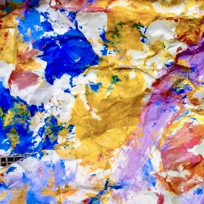

59 Orchard Street Clayton, CA 94517
925-333-5858 info@kalegallery.com
Wednesday - Sunday, 12 - 6
Choice as metaphor
NOVEMBER 19, 2015 - JANUARY 11, 2016
RECEPTION: WEDNESDAY, NOVEMBER 19, 6 – 8
Choice as metaphor brings together more than 20 artists who cut, crumple or crease their material.
The gallery has long been interested in the intersection of works on paper and photography. Choice as metaphor highlights the artists' physical interventions, both delicate and violent.
Material included in the exhibition, but not limited to: 19th Century steel engravings, pulp fiction, Rives paper, anonymous photographs, pornography, beauty magazines, consumer packaging, steel, gelatin silver paper, color-aid, subway posters & legal tender.
Artists included in the exhibition, but not limited to: Stephen Aldrich, Thomas Allen, Jaq Belcher, Julie Cockburn, Danielle Durchslag, Tom Gallant, Debra Hampton, Lisa Hoke, Cal Lane, Lance Letscher, Chris McCaw, Vanessa Marsh, Andrea Mastrovito, Mia Pearlman, Abigail Reynolds, Casey Ruble, Simon Schubert, Lauren Seiden, Gerald Slota, Maritta Tapanainen, Wyatt Gallery + Hank Willis Thomas, Kako Ueda & Mark Wagner.
Choice as metaphor will remain on view through January 11. Kale gallery is open Wednesday – Sunday, 12 – 6pm. To request images, please contact the gallery at 925-555-1212 or info@kale.com.
Tweet